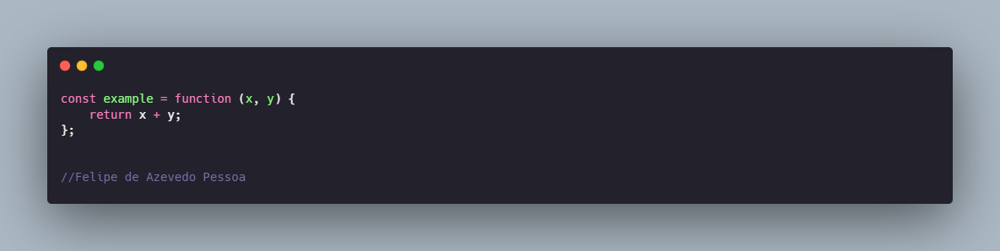
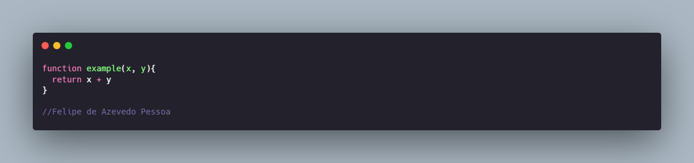
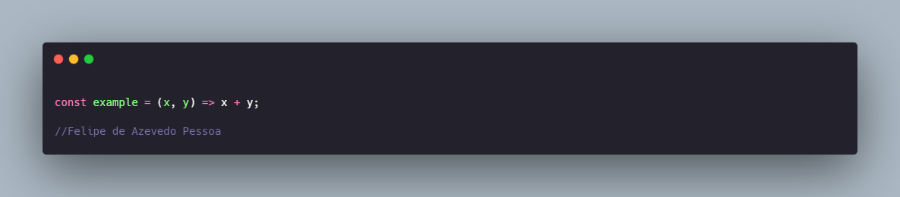

formas de declarar funções em Javascript
No JavaScritp há basicamente três formas de declarar funções: function expression, function declaration e arrow function. A seguir mostrarei as principais características de cada forma.
Function Expression
A palavra-chave function pode ser utilizada para declarar uma função dentro de uma expressão. Desta forma, o nome da função pode ser omitido (função anônima). A imagem a seguir demonstra os elementos necessários para declarar um função utilizando esta forma.
Function Declaration
Diferentemente da function expression, a function declaration necessita de um indentificador. Além disso, a function declaration pode sofrer hoisting. Para saber mais sobre sobre hoisting acesse nosso artigo sobre o tema clicando aqui. A imagem a seguir demonstra os elementos necessários para declarar um função utilizando esta forma.
Arrow Function
Arrow function é a forma simplificada de declarar funcões. Utilizando essa forma de declararação, não é necessário utilizar a palavra chave function para indicar que se trata de uma função. Para isso, após os parâmetros, basta colocar os sinais => e logo em seguida o corpo da função. Além disso, caso o copo da função tenha somente uma linha, não é necessário colocar a palavra-chave return. Vale ressaltar, que a notação this se comporta de forma diferente em arrow functions. A imagem a seguir demonstra os elementos necessários para declarar um função utilizando esta forma.
Felipe de Azevedo Pessoa
Estudante de Informática para Internet